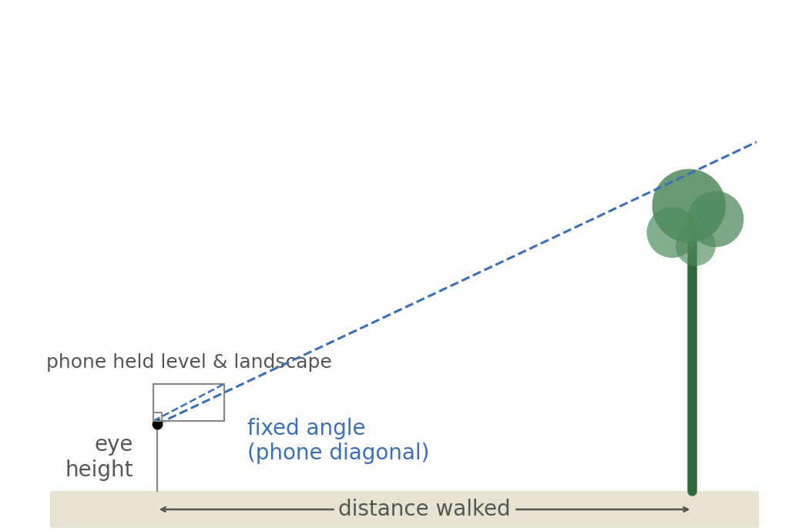

Estimating the Height of a Tree using Trigonometry

Suppose you need to measure the height of the tree in front of you, standing on the ground with nothing but your own two feet and the phone that you are using on this tour.
The idea
Everything below comes down to one right-angled triangle:
- your eye,
- the point on the tree that is at the same height as your eye,
- the top of the tree.
Given this triangle, the vertical height of the tree can be estimated given the walking distance to the tree and the slope of the hypotenuse, i.e. \[\text{tree height} = \text{eye height} + \text{distance} \times \tan(\text{angle})\]
The distance is easy to estimate: pace it out.
To estimate the angle accurately we would use a clinometer. However, we can get a good approximation using your phone!
Hold your phone flat, in landscape orientation, right beside your eye, with its bottom edge level and its near-bottom corner at your eye (see diagram).
Now you need to adjust your position so that the sight line across the diagonal of your phone extends to the tip of the tree.
Because the phone’s shape never changes, that sightline always makes exactly the same angle with the horizontal – fixed the moment you know its width and height, and the same every single time you use it:
\[\text{angle} = \arctan\!\left(\frac{\text{phone height}}{\text{phone width}}\right)\]
Try it yourself
- Stand facing the tree, somewhere with room to walk backwards.
- Hold your phone flat, in landscape orientation, right beside your eye – bottom edge level, near-bottom corner at your eye.
- Sight past that corner, along the phone’s diagonal, out towards the tree.
- Stop looking at your phone and adjust your position by walking forwards or backwards. Repeat steps 1-4 until the treetop lines up exactly along the diagonal line.
- Now count the number of paces you needed to get to the base of the tree.
- Enter your pace count, your own pace length, and your eye height into the calculator below.
- Hit Reveal the true height! and see how close you got.
A note on accuracy: the trigonometry here is exact – given a truly level sightline, a correctly measured pace length and eye height, and a phone held steadily, this method recovers the real height. In practice, all four of those introduce small errors (which is exactly why it’s a good estimate, not a laser rangefinder), so don’t be surprised if your first go is off by a metre or two either way – try pacing out your pace length carefully first, and see if your estimate improves.